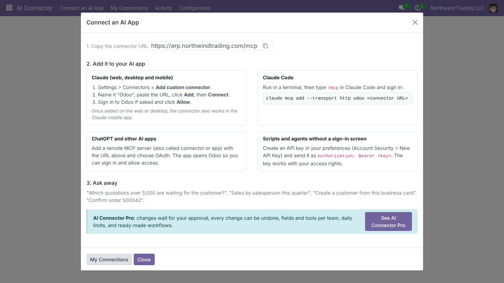
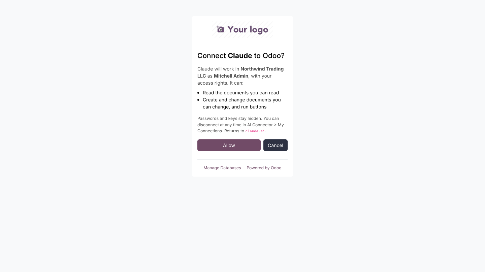
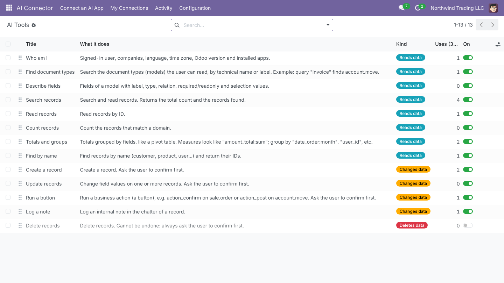
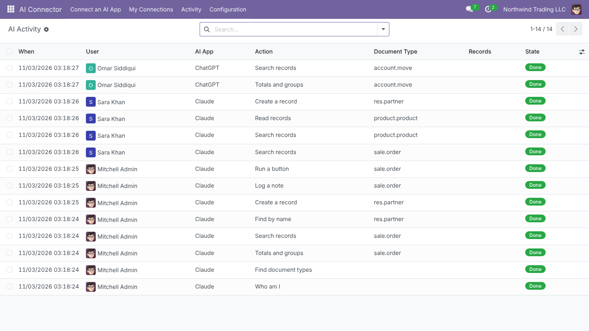
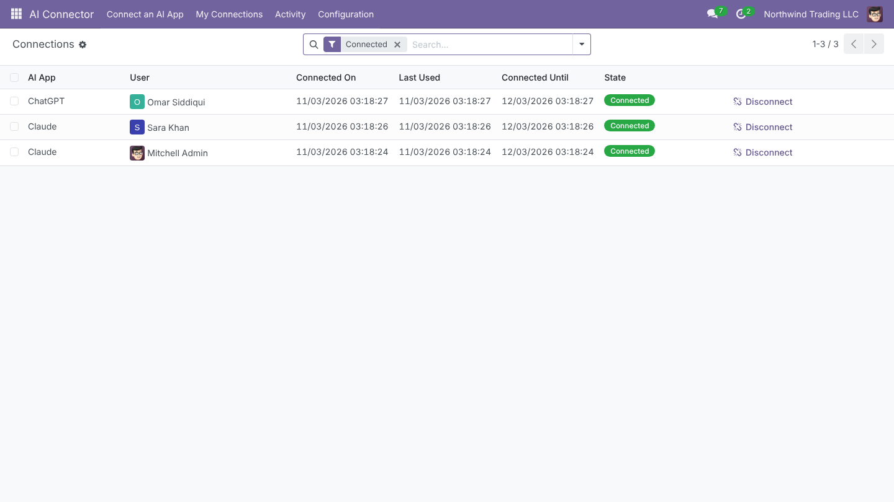
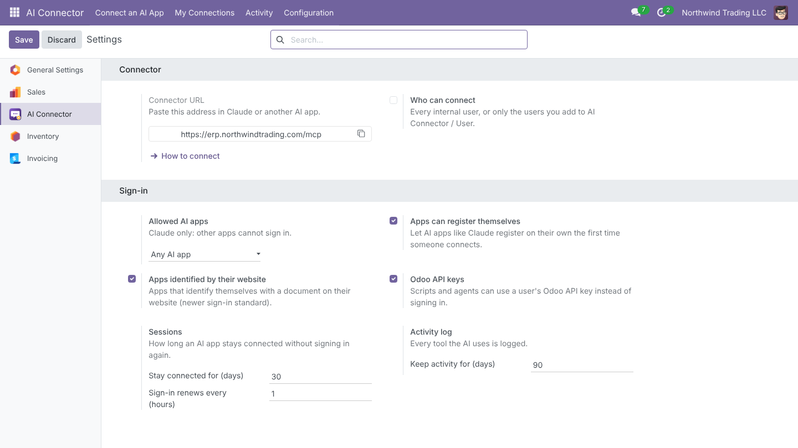

Ask Claude, ChatGPT or any MCP app about your Odoo data and let it do the work: find documents, build totals, create and update records, confirm orders. Users sign in with Odoo and keep exactly the rights they have. Free, and no service in between.

The AI works as the signed-in user. Odoo's access rights apply.
No API keys to paste. Works in Claude on the web, desktop and phone.
No middle server and no subscription. Your data goes straight to the AI app you chose.
No keys to copy. The AI app opens your Odoo, the user signs in and allows access. The connection renews on its own and can be ended at any time.


Find documents, read fields, build totals like a pivot table, create and update records, run buttons such as Confirm or Post, and log notes. Switch each tool on or off.
Every action is logged with the user, the AI app, the document and the result. Errors and refusals stand out, so you see what the AI tried.


Each user signs in with their own Odoo user. Admins see every connection and can disconnect it.
Let every internal user connect, or only the users you choose. Allow any AI app or only Claude, and set how long a connection lasts.

Approvals before sensitive changes, a full change history with one-click undo, hidden fields and limits per team, and ready-made workflows. Installs on top of this app.
See AI Connector Pro| AI Connector | AI Connector Pro | |
|---|---|---|
| Sign in with Odoo (OAuth), each user with their own rights | ||
| Claude, ChatGPT and other MCP apps | ||
| Search, totals, create, update, buttons, notes | ||
| Switch each tool on or off | ||
| Passwords and keys always hidden | ||
| Activity log of everything the AI did | ||
| Changes wait for approval (by document type, field or button) | - | |
| Full change history with one-click undo | - | |
| Hidden fields and document types per team | - | |
| Read-only teams and blocked tools | - | |
| Daily limits per user | - | |
| Ready-made workflows (prompts) | - | |
| Price | Free | $149 once |
Claude (web, desktop and mobile), Claude Code, and other apps that support remote MCP servers with OAuth sign-in. Scripts can use an Odoo API key.
No. It works as the signed-in user, so Odoo's access rights and record rules apply. Passwords, keys and tokens are always hidden, and technical settings are off limits.
No. The connector runs inside your Odoo. Only what the AI asks for goes to the AI app the user connected.
Your Odoo must be reachable over https from the internet, because the AI app connects to it. With several databases on one server, select the database by domain (dbfilter).
No. Odoo Online does not allow third-party apps. Use Odoo.sh or On-Premise.
Yes. AI Connector Pro adds approvals, undo, team rules, limits and workflows.
| Technical name | novator_mcp |
| Odoo version | Odoo 18.0 |
| Editions | Community & Enterprise |
| Hosting | Odoo.sh & On-Premise (reachable over https) |
| Modules it depends on | base_setup, web |
| Python libraries | None beyond Odoo's own |
| Protocol | MCP over Streamable HTTP: 2026-07-28, 2025-11-25, 2025-06-18, 2025-03-26 |
| Sign-in | OAuth 2.1 (PKCE S256, refresh tokens, dynamic client registration, client ID metadata documents), Odoo API keys |
| License | GNU Affero General Public License v3 (AGPL-3) |
Setup questions, a connection that will not sign in, or a workflow for your team: write to us.
support@novator.co www.novator.coNovator Technologies · Odoo Certified Partner